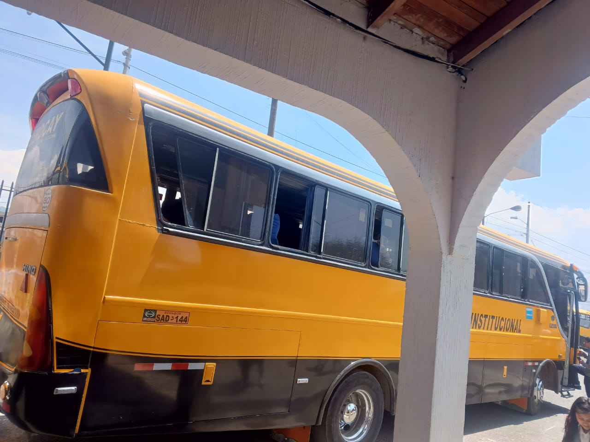
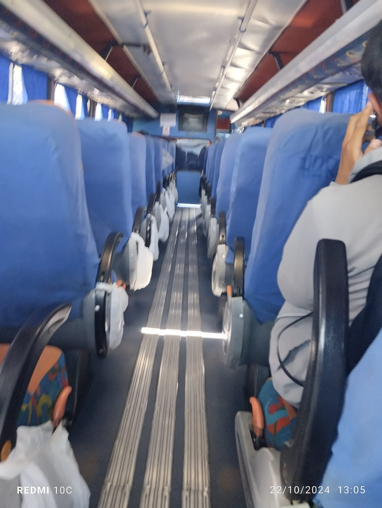

|
TRANSPORTE
EL TRANSPORTE DE RRECORRIDO DEL COLEGIO
ES EL SERVICIO DE TRANPORDE QUE SE ENCARGA DE TRTASLADAR
A LOS ESTUDIANTES DESDE SUS HOGARES HASTA EL COLEGIO
Y VISEVERSA,SIGUIENDO RUTAS PREVIAMENTE ESTABLECIDAS
CONTAMOS CON VEHÍCULOS MODERNOS Y PERSONAL CAPACITADO QUE
GARANTIZAN UN VIAJE SEGURO Y AGRADABLE.
NUESTRAS RUTAS ESTÁN CUIDADOSAMENTE PLANIFICADAS PARA CUBRIR DIVERSAS ÁREAS,
PERMITIENDO A LOS ESTUDIANTES ACCEDER FÁCILMENTE AL COLEGIO.
ADEMÁS, PROMOVEMOS UN AMBIENTE DE RESPETO Y RESPONSABILIDAD DURANTE EL TRAYECTO, ASEGURANDO QUE CADA ALUMNO LLEGUE A SU DESTINO CON PUNTUALIDAD Y EN ÓPTIMAS CONDICIONES.


|